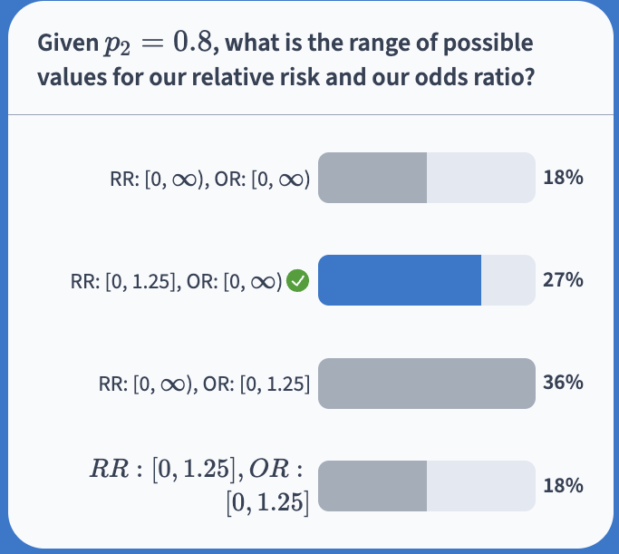

Muddy Points
Lesson 1: Welcome
Muddy Points from Spring 2025
1. Finding the range for OR using the proportion. (Poll everywhere question 3)
Let’s use the Poll Everywhere question for reference: 
For the odds ratio: \[\begin{aligned} \widehat{OR} = & \dfrac{\dfrac{\widehat{p}_1}{1 - \widehat{p}_1}}{\dfrac{\widehat{p}_2}{1 - \widehat{p}_2}} = \dfrac{\dfrac{\widehat{p}_1}{1 - \widehat{p}_1}}{\dfrac{0.8}{1 - 0.8}} = \dfrac{\dfrac{\widehat{p}_1}{1 - \widehat{p}_1}}{\dfrac{0.8}{0.2}} = \dfrac{\dfrac{\widehat{p}_1}{1 - \widehat{p}_1}}{4} = \dfrac{\widehat{p}_1}{4(1 - \widehat{p}_1)} \end{aligned}\]
Now we can look at a few values for \(\widehat{p}_1\) and see what the resulting \(\widehat{OR}\) is:
- \(\widehat{p}_1 = 0\): \(\widehat{OR} = \dfrac{0}{4(1 - 0)} = 0\)
- \(\widehat{p}_1 = 0.25\): \(\widehat{OR} = \dfrac{0.25}{4(1 - 0.25)} = \dfrac{0.25}{3} = 0.047\)
- \(\widehat{p}_1 = 0.5\): \(\widehat{OR} = \dfrac{0.5}{4(1 - 0.5)} = \dfrac{0.5}{2} = 0.25\)
- \(\widehat{p}_1 = 0.75\): \(\widehat{OR} = \dfrac{0.75}{4(1 - 0.75)} = \dfrac{0.75}{1} = 0.75\)
- \(\widehat{p}_1 = 0.9\): \(\widehat{OR} = \dfrac{0.9}{4(1 - 0.9)} = \dfrac{0.75}{1} = 2.25\)
- \(\widehat{p}_1 = 0.95\): \(\widehat{OR} = \dfrac{0.95}{4(1 - 0.95)} = \dfrac{0.95}{4 \times 0.05} = 4.75\)
- \(\widehat{p}_1 = 0.99\): \(\widehat{OR} = \dfrac{0.99}{4(1 - 0.99)} = \dfrac{0.99}{4 \times 0.01} = 24.75\)
- \(\widehat{p}_1 = 1\): \(\widehat{OR} = \dfrac{1}{4(1 - 1)} = \infty\)
As we approach \(\widehat{p}_1 = 1\), our odds ratio becomes claser and closer to infinity. And as we get to \(\widehat{p}_1 = 0\), our odds ratio is 0.
There’s additional info in the Muddy Point from last year (Section 2.2 on this page).
2. What was the point of the method=wald?
We’ll go over what “wald” means in a future class. For now, we just use it in the oddsratio() function to make sure we are using a Normal approximation of the Binomial distribution.
3. Is the main assumption for normal approximation of a binomial distribution that expected cell count be greater than 5?
Yep! You’ll see it as 10 in some places, but our assumption is that expected cell counts are greater than 5!
4. Risk difference, RR, and OR all have to use proportions, correct?
Yep! They are just different measures for how we compare the proportions of two groups!
5. I would love some elaboration of exactly why a range of \([0,\infty)\) vs \([0, \text{fixed number}]\) would be preferable. Is it because during analysis having a fixed range makes the scale less interpretable?
You’re on the right track. A limited range for a specific proportion would not be preferred because we would naturally compare its magnitude to other risk ratios that may not be limited to the same range.
Let’s compare two scenarios:
- \(\widehat{p}_1 = 1\) and \(\widehat{p}_2 = 0.8\), with \(\widehat{RR}=1.25\)
- \(\widehat{p}_1 = 0.6\) and \(\widehat{p}_2 = 0.2\), with \(\widehat{RR}=3\)
In scenario 1, an RR of 1.25 makes it seem like the risk ratio isn’t very high, but in reality a change from 0.8 to 1 is amazing if getting to 100% success is important. Now when we put the RR’s from scenario 1 and 2 next to each other, we may think scenario 2’s risk ratio is much greater than scenario 1. In some ways, it is. However, scenario 1 cannot reach a RR of 3, so a direct comparison between the ratios feels a little misleading.
Now let me introduce scenario 3:
- \(\widehat{p}_1 = 0.25\) and \(\widehat{p}_2 = 0.2\), with \(\widehat{RR}=1.25\)
When we compare scenario 3’s RR of 1.25 to scenario 1’s RR of 1.25, do the RR’s carry the same practical importance? I think not. That’s because the range of RR’s possible for scenario 1 (with \(\widehat{p}_2 = 0.8\)) is much smaller than the range of possible RR’s in scenario 3 (with \(\widehat{p}_2 = 0.2\))
There’s additional info in the Muddy Point from last year (Section 2.2 on this page).
Muddy Points from Spring 2024
1. “times greater than” vs just “times” in interpretation
I’ve seen it both ways. It comes down to more of an English language nuance, with what seems to be a long battle between viewpoints. Or maybe more accurately, there is a grammatically correct way to construct the sentence, but with people understanding the meaning the “incorrect” way. I tend to be more lenient when it comes to grammar in this way, but maybe that’s because I have a general distaste when languages are rigid and don’t accommodate how people currently speak and write.
2. For the relative risks poll everywhere question #2, how were they derived?
For #1 with Trt A’s risk as 0.01 (aka \(risk_A=0.01\)) and Trt B’s risk as 0.001 (aka \(risk_B=0.01\))
- The risk ratio is: \(\widehat{RR} = \dfrac{\widehat{p}_1}{\widehat{p}_2} = \dfrac{risk_A}{risk_B} = \dfrac{0.01}{0.001} = 10\)
For #2 with Trt A’s risk as 0.41 (aka \(risk_A=0.41\)) and Trt B’s risk as 0.401 (aka \(risk_B=0.401\))
- The risk ratio is: \(\widehat{RR} = \dfrac{\widehat{p}_1}{\widehat{p}_2} = \dfrac{risk_A}{risk_B} = \dfrac{0.41}{0.401} = 1.02\)
3. Ranges that odds ratios can take (0, infinity) vs the ranges that risk ratios can take.
Yeah, so both can theoretically take on the range \([0, \infty)\). Both are ratios, so we also have to think about the range of the denominator and numerator. For relative risk, the numerator and denominator are probabilities that can only take values from 0 to 1. While for ORs, the denominator and numerator are odds that can be a range of values \([0, \infty)\).
The main point I was trying to make was that once we observe one group’s proportion/probability, then RRs and ORs will differ in their potential range. Let’s say I observe the proportion fro group 1 and now know the numerator for RR and the odds in the numerator for OR. Because the RR has numerator and denominator that has ranges \([0, 1]\), if we know the proportion of group 1 (aka numerator value), then the ratio itself has a smaller range of values because the denominator can only be between 0 and 1. Because the OR has numerator and denominator that has ranges \([0, \infty)\), if we know the proportion of group 1, then we do have a fixed numerator. However, the denominator can still be in \([0, \infty)\).
4. For the odds ratio equation that we reviewed today, is it different from ad/bc ? If they are different, when is it appropriate to use the equation we just reviewed over the other? p1/(1-p1) / p2/(1-p2)
Nope! These are the same! If you learned it that way, you can definitely use it when we are working with contingency tables. However, once we move into ORs from regression with multiple covariates, I think it’s better to understand the ORs and odds in terms of the probability/proportion.
5. In Epi, we were very strictly told that Odds Ratios were only to be used in one type of study. (I.e. we CAN NOT use them in cross-sectional and cohort studies) only case-control. So what is the application of attempting to utilize them, if each respective type of study already has a “pre-assigned” statistical method that suits it best?
Odds ratios CAN be used in cross-sectional AND cohort studies. It is often an over-estimate of the relative risk in those situations, so it is important to interpret it ONLY as the odds ratio.
Each respective study does not have a pre-assigned method. The only restriction is that relative risk cannot be used in case-control studies.